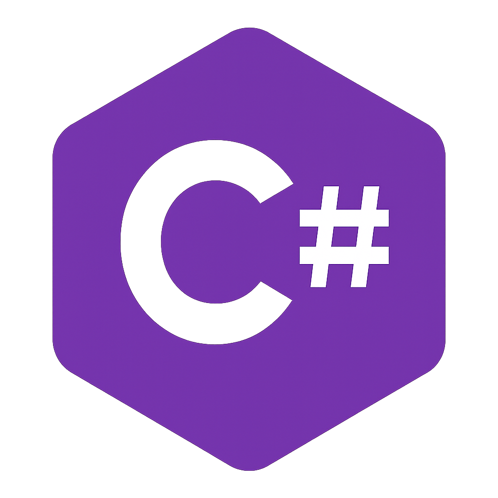
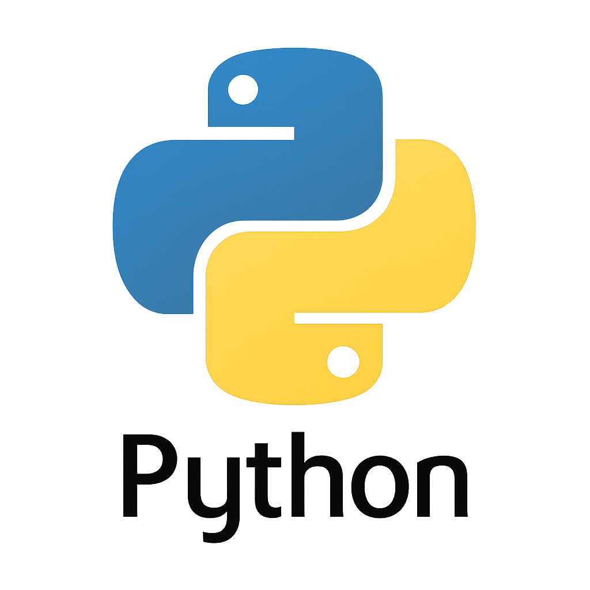
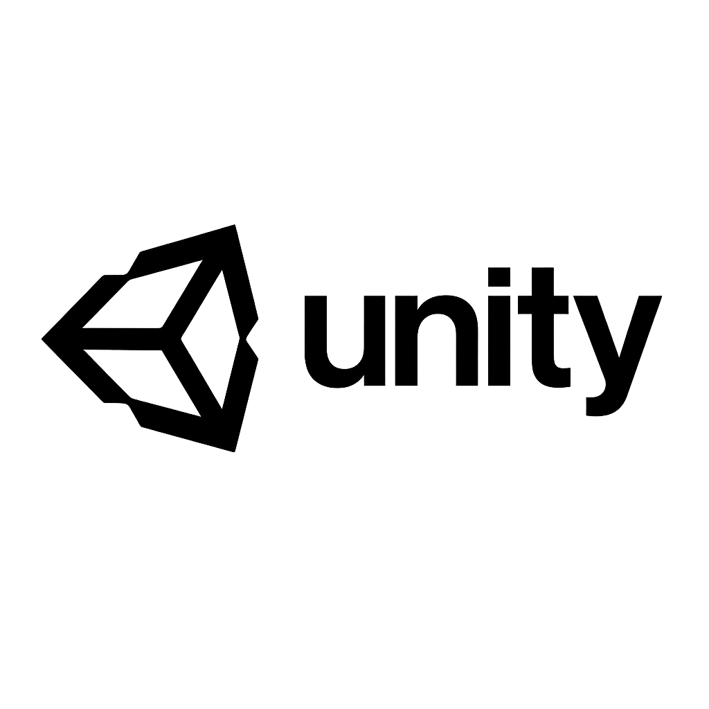
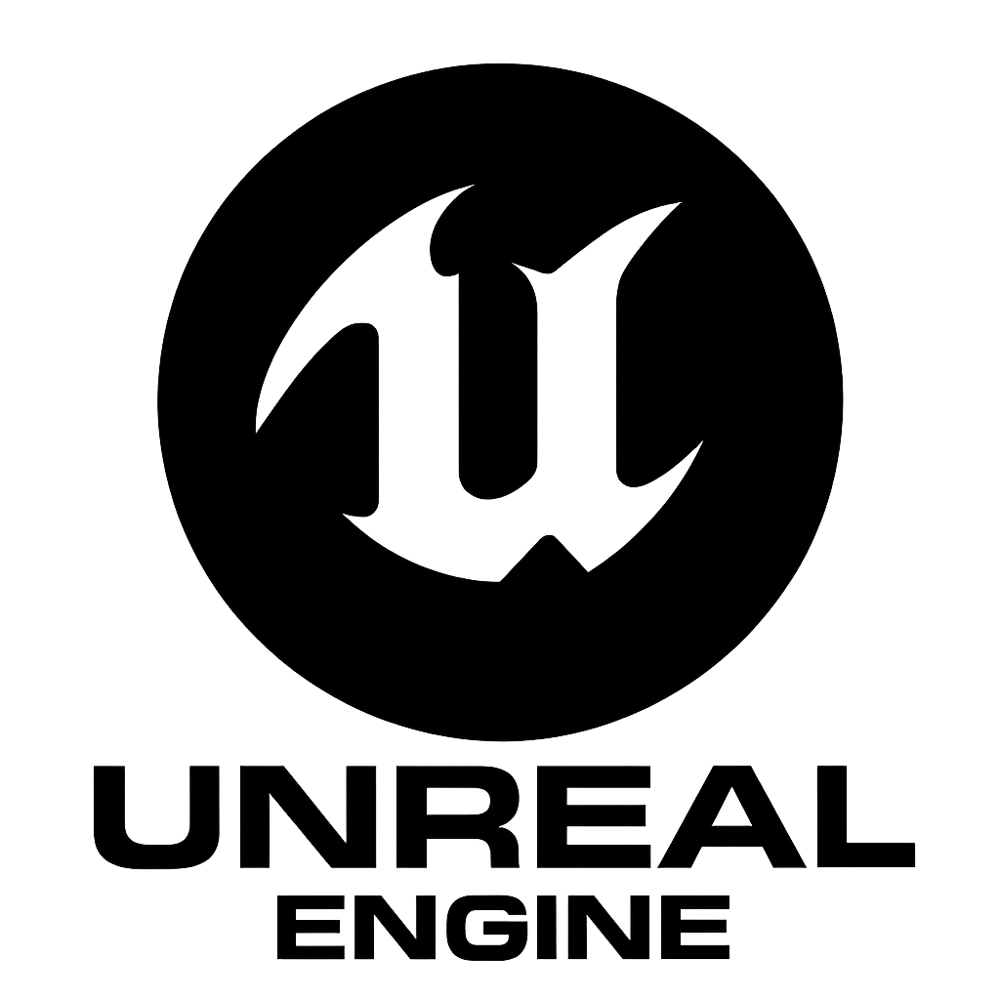
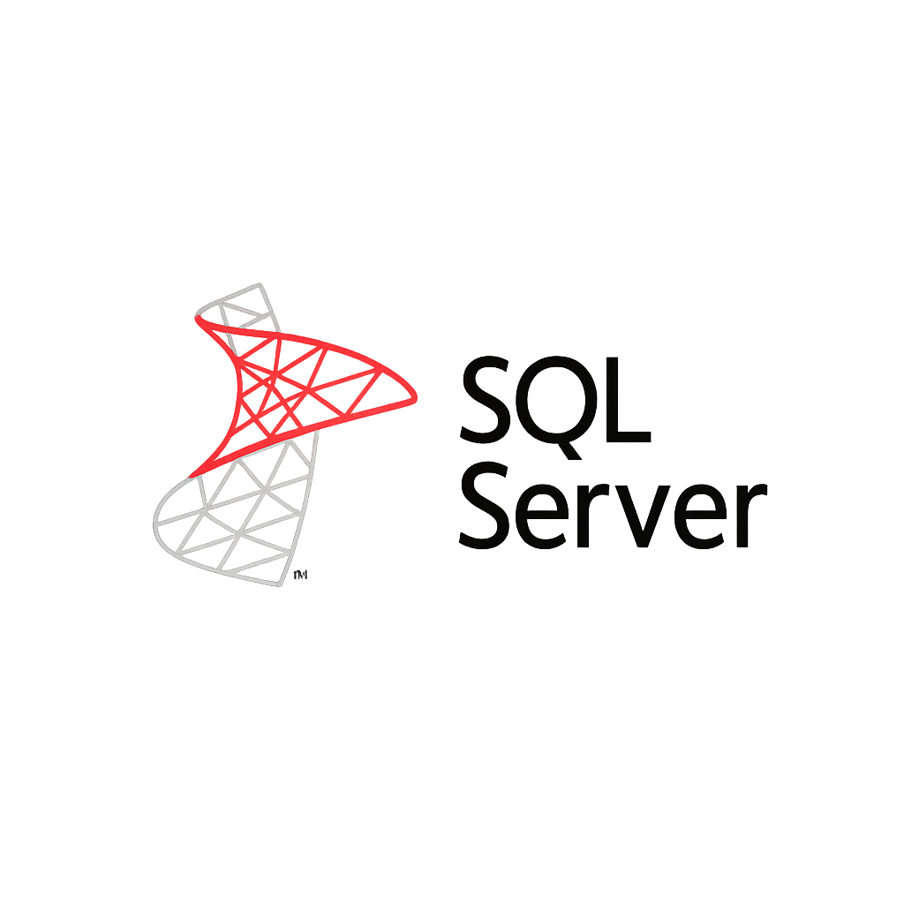
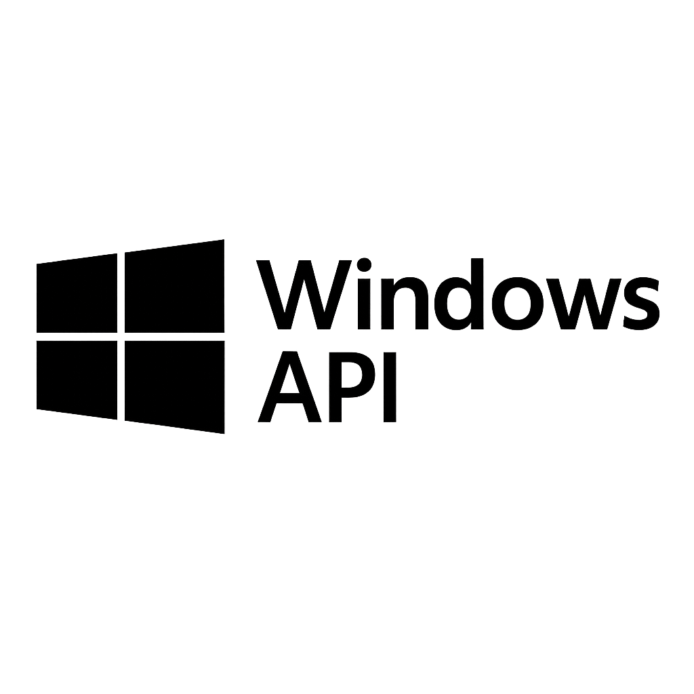

Skills

C#
.NET / OOP

Python

Unity
Flutter

Unreal

SQL Server

Windows API
I graduated from the Computer Programming department at Van Yüzüncü Yıl University.
I'm a self-taught software developer with a strong passion for learning and building. My primary focus is on C# and .NET, where I specialize in object-oriented programming (OOP) — the area in which I am most proficient.
I actively develop 2D and 3D games using Unity. One of my current projects, a 2D game called Brain Clash, is in the testing phase and nearly ready for release. I’m also working on a separate 3D game project in development.
I have hands-on experience with Unreal Engine at a basic level and understand its interface and logic structure. I’ve received training in Flutter for mobile app development and have practical experience working with Microsoft SQL Server for database operations.
I've also worked on cybersecurity-focused research projects, particularly those involving the analysis and simulation of firewall evasion techniques — purely for educational and ethical purposes.
While I'm still advancing in Python, I’m a fast learner who quickly adapts to complex technical environments. I enjoy building creative and high-performance solutions and consistently push my limits to grow in the world of technology.
Worked as an IT Specialist responsible for managing the company's technical infrastructure, software systems, and web presence.
Led the design and deployment of the corporate website martitmgd.com, including WordPress setup, hosting configuration, and service structuring.
Developed 2D and 3D games using Unity. Currently working on a 3D game and a 2D release-ready game named Brain Clash.
Built gameplay systems, UI interactions, pattern logic, and multiplayer mechanics using C# and OOP principles.
Designed and launched responsive WordPress websites for rlog.com.tr and martitmgd.com.
Managed hosting, SEO optimization, custom service pages, and mobile-first design principles.
Worked on ethical firewall evasion technique simulations using Kali Linux and sandbox environments.
Created basic payload test tools and analyzed detection behaviors for educational purposes.
Van Yüzüncü Yıl University – Computer Programming 2020 – 2022

C#
.NET / OOP

Python

Unity
Flutter

Unreal

SQL Server

Windows API
Developed a modern, responsive, corporate WordPress site for martitmgd.com. The site includes dynamic service pages, a multilingual structure, and SEO optimization tailored for an IT consultancy firm.
Visit WebsiteDesigned and implemented rlog.com.tr, a clean and user-friendly logistics company website using WordPress. Includes custom service sections, contact forms, and mobile optimization features.
Visit Website